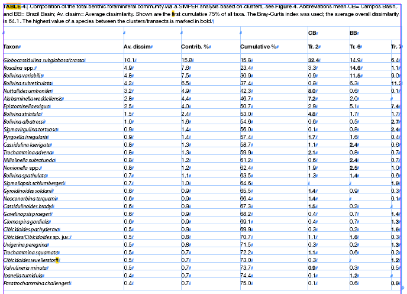
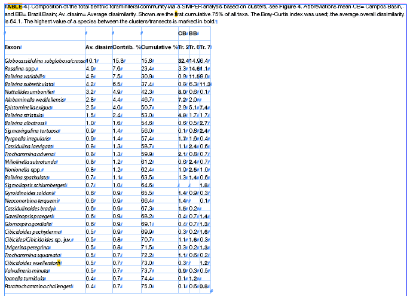
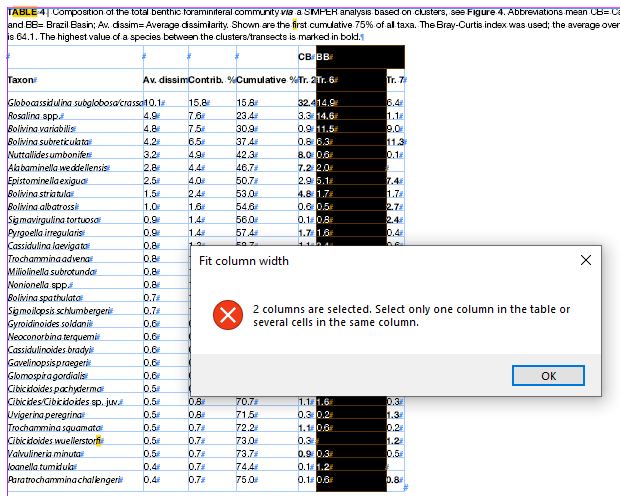
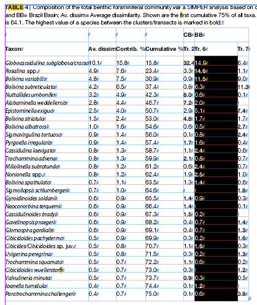
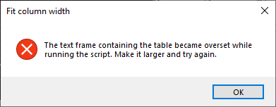

Fit column width
This is a script for InDesign. Written and tested in version 2022 on Windows.
The original version was made by Rob Thomas who asked me — Kasyan — to help to fix a bug. I reworked it from scratch.
The script fits the column width to the longest line of text found in this column.
How to use
Select a column in the table or several cells in the same column and run the script. Currently, the script can process columns only one by one.
Before

After

If a column contains merged cells, the script may give a warning that more than one column is selected.

In this case, select only the cells that are not merged, like so:

If the text frame containing the table becomes overset while running the script, the script gives a warning and stops. In such an event, make the frame larger and try again.

If a cell gets overset, the script adds 1 point to the width of the column until the cell fits all the text, or the width of the column reaches the maximum column width limit defined in the maxColumnWidth variable set to 300 pts by default (feel free to change it if necessary).
The script works in points. If the document is set to other measurement units, the script temporarily sets them to points and restores the original units at the end.
Click here to download the script.
This is a potential crowd-funding project. Any feedback is welcome! I am open to your bug reports and suggestions.
If you found this script useful and want me to develop it further, consider supporting me by donating via PayPal directly to my e-mail: askoldich [at] yahoo [dot] com. (Due to PayPal’s restrictions for Ukraine, I can’t have a Donate button on my site.)